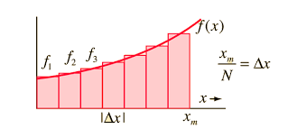

Bienvenido
¡Te damos la bienvenida a este recorrido por el Cálculo Integral! En esta página exploraremos a fondo, de forma clara y visual, el concepto del Área bajo la curva.
Esta no es solo una idea abstracta; es una de las aplicaciones fundamentales y más poderosas del Cálculo Integral, sirviendo como puente entre la geometría (el cálculo de áreas) y el análisis matemático (la integración).
Navega a través de las diferentes secciones para descubrir su definición formal, el método exacto para calcularla, ejemplos prácticos y las múltiples aplicaciones que tiene en la física, la economía y la estadística.

Introducción al Área bajo la Curva
El concepto de área bajo la curva es uno de los pilares del cálculo integral. Representa la acumulación de valores de una función en un intervalo determinado, lo que nos permite cuantificar magnitudes como distancia, energía, probabilidad o crecimiento.
🔹 Concepto básico
El área bajo la curva describe el espacio comprendido entre la gráfica de una función f(x) y el eje X, dentro de un intervalo [a, b]. Si la función es positiva, el área se considera positiva; si está por debajo del eje X, el área se considera negativa.
🔹 Interpretación geométrica
Geometricamente, calcular el área bajo la curva es equivalente a sumar el área de infinitos rectángulos de base infinitesimal dx y altura f(x). Esa suma infinita se expresa como una integral definida:
A = ∫ab f(x) dx
🔹 Fundamentos matemáticos
- La integral definida es el límite de una suma de Riemann, donde se suman áreas pequeñas (rectángulos).
- El Teorema Fundamental del Cálculo relaciona la derivada con la integral, estableciendo que:
∫ab f(x) dx = F(b) - F(a)
donde F(x) es una antiderivada de f(x).
🔹 Tipos de áreas
- Área positiva: Cuando f(x) ≥ 0 en el intervalo [a, b].
- Área negativa: Cuando f(x) ≤ 0 en el intervalo [a, b].
- Área total: Es la suma de las áreas absolutas, independientemente del signo.
🔹 Relación con el cálculo integral
El cálculo integral permite encontrar áreas exactas incluso bajo curvas irregulares. Mientras el cálculo diferencial analiza cambios instantáneos, la integración estudia acumulaciones o totales.
🔹 Aplicaciones principales
- Calcular distancias recorridas a partir de velocidades variables.
- Determinar trabajo o energía en física.
- Medir probabilidades acumuladas en estadística.
- Obtener ingresos o costos totales en economía.
- Analizar tasas de crecimiento o decaimiento en biología.
🔹 Conclusión
El estudio del área bajo la curva es esencial para comprender el mundo en términos de acumulación y cambio continuo. Su dominio permite aplicar las matemáticas a fenómenos reales de forma precisa y profunda.
Definición
El área bajo la curva es una forma de medir cuánto espacio ocupa una gráfica entre la línea del eje X y una curva dentro de cierto intervalo.
Imagina que tienes una gráfica donde el eje X representa el tiempo y el eje Y representa otra cantidad, como la velocidad de un auto, la temperatura o las ventas. Si pintas la parte que queda debajo de la curva y encima del eje X, el tamaño de esa parte pintada es el área bajo la curva.
Por ejemplo, si la gráfica muestra la velocidad de un carro con respecto al tiempo, el área bajo la curva representa la distancia total recorrida. Esto sucede porque la distancia se obtiene multiplicando velocidad por tiempo, y la integral (que es la operación que se usa para calcular el área) hace esa suma de forma muy precisa, incluso cuando la velocidad cambia constantemente.
En matemáticas, el área bajo la curva se calcula con una integral definida, que se escribe así:
A = ∫ₐᵇ f(x) dx
Esto significa “sumar todos los pedacitos pequeños de área” desde el punto a hasta el punto b.
El área bajo la curva se usa en muchos campos:
- En física, para encontrar distancia, trabajo o energía.
- En economía, para calcular ingresos o costos totales.
- En probabilidad, para saber la posibilidad de que ocurra un evento.
- En biología o medicina, para estudiar concentraciones de sustancias en el cuerpo.

Método de integración
Pasos para determinar el área bajo la curva de una función:
- Reconoce la función f(x) y los límites a y b.
- Realiza una tabla de valores con los puntos del intervalo.
- Grafica utilizando esos valores.
- Encuentra una antiderivada F(x) tal que F′(x) = f(x).
- Evalúa la integral: ∫ab f(x) dx = F(b) − F(a).
Ejemplos prácticos
A continuación se presentan videos con diferentes ejemplos del cálculo del área bajo la curva:
Aplicaciones y Herramientas
Explora estas herramientas interactivas para graficar funciones y calcular integrales definidas (área bajo la curva):
Créditos
A continuación se detallan los créditos de elaboración de este proyecto:
Elaboración de página web y diseño: Juan Pablo Arroyo Godoy
Elaboración de ejemplos prácticos sobre el tema: Geovany Alejandro Ajin Perez